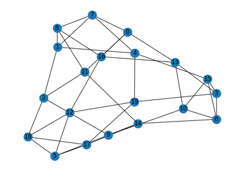

Brain Graph Examples¶
This gallery contains runnable examples demonstrating how to generate and visualize synthetic brain graphs using the utilities in this project.
brain_graph.py: Generates a random regular graph with NetworkX and displays it with Matplotlib.
Requirements¶
Make sure you have the dependencies installed:
networkx
numpy
matplotlib
You can install all dependencies via the project requirements:
pip install -r requirements.txt
Brain Graph Example

Brain Graph Example